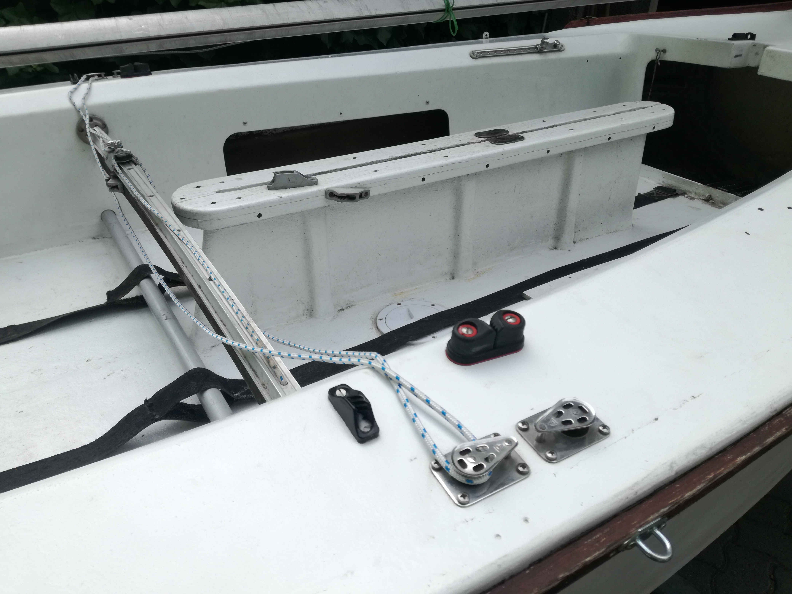
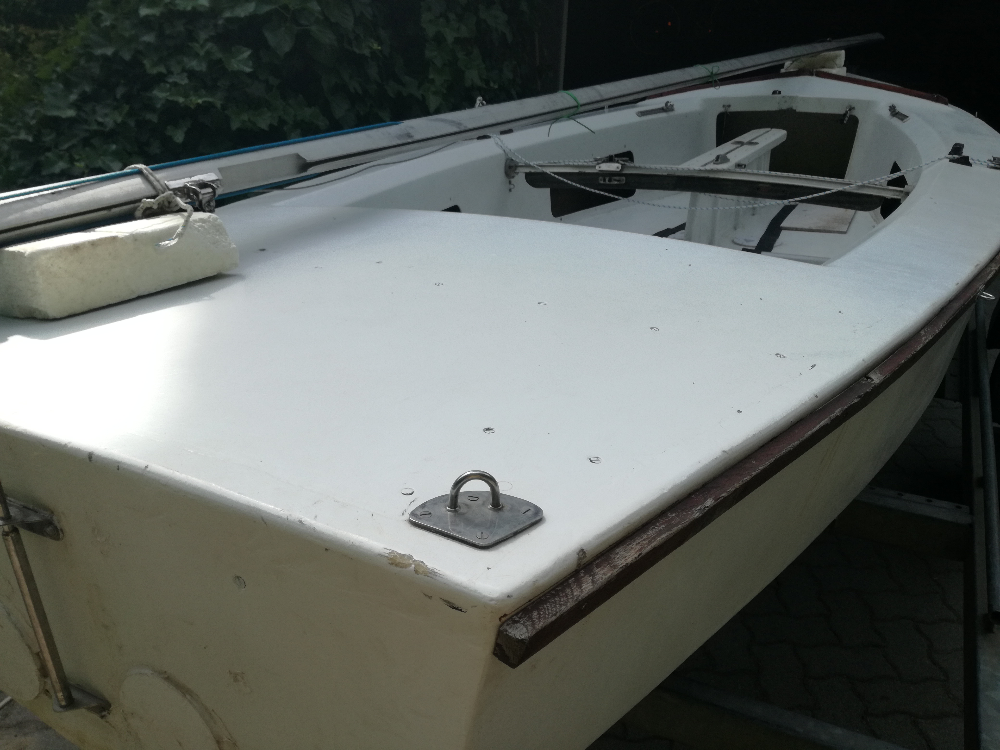
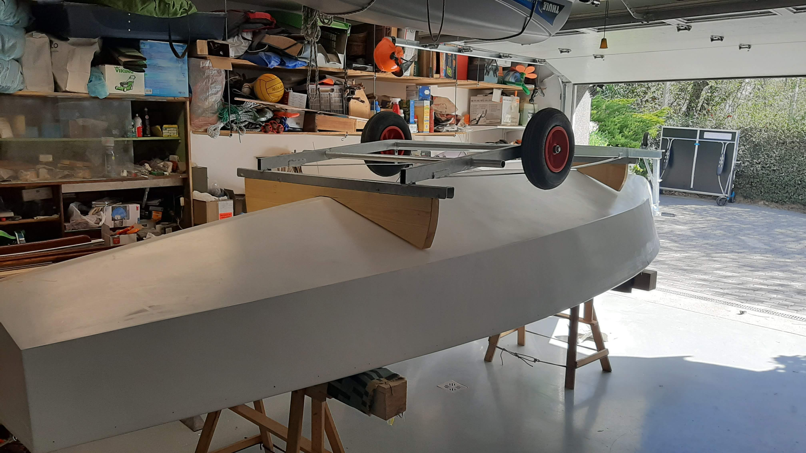
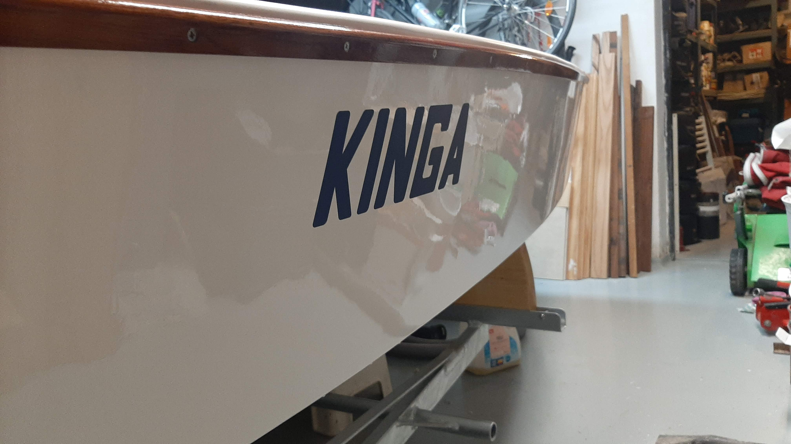
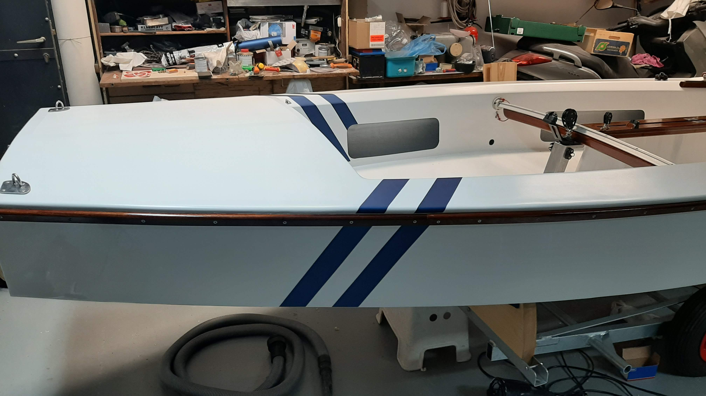
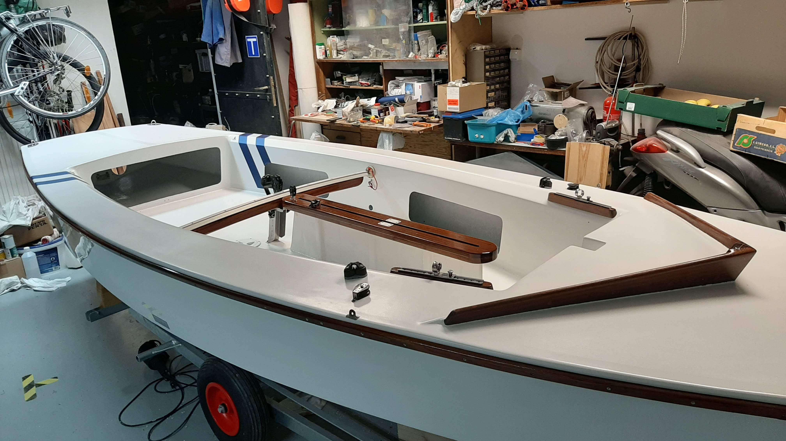

Valójában a hajó még nincs teljesen kész, az utolsó simítások még hátra vannak, de nagy feladat már nem maradt hátra. Ami még várat magára az egy két finombeállítás, illetve az első vízrerakás.

Amikor hozzánk került a hajó, nagyon rossz állapotban volt. Újra volt festve, nagyon igénytelen módon, a faalkatrészei elkorhadtak, rengeteg fölösleges szerelvény és lyuk volt rajta amiket a későbbiek folyamán be kellett foltoznunk.

A hajó élein végig rengeteg repedés, ütődés nyoma volt látható. Szakszerűtlen javítások, ígénytelen munkák nyomai éktelenkedtek mindenhol. :(

A hajót háromszor is fejre kellett borítai, mert csak így lehetett az alját csiszolni és festeni. Ez a folyamat nem éppen egyszerű egy garázsban mindenféle daru nélkül egy közel 170 kilós és ekkora kiterjedésű hajótest esetében.

Mindenféle eretnek nevek után visszakapta az eredeti nevét: KINGA. A név matricaként került fel. A betűk egyedi tervezésűek, amiket vektrografikus programban kellett megrajzolni, majd matricavágóval kivágni.

Itt már felkerültek a svungok. Egy ősi vitorlás história szerint ezek a csíkok sokkal gyorsabbá teszik a hajót, és nem mellesleg sokkal esztétikusabbá és modernebbé.

És itt a végeredmény. A hajó itt már tényleg olyan állapotban van ahol az ember leporolhatja a kezét és azt mondhatja, hogy készen van. Igaz, mint említettem néhány dolog még változni fog rajta, de a hajó tulajdonképpen készen van!